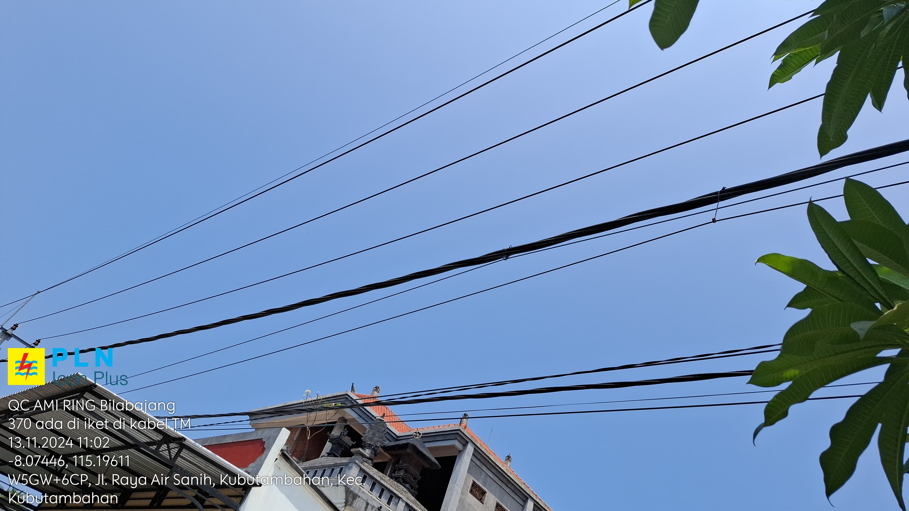
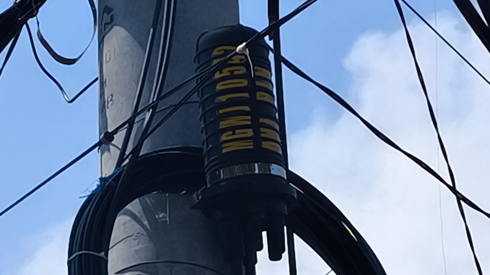

Panduan Langkah demi Langkah Quality Control
1

Menggunakan Atribut K3.
2

Siapkan Form Quality Control.
3

Hubungi Mitra Untuk Mengetahui Rute Yang Di Tentukan.
4

Buka Maps Pembangunan Yang Sudah Di Berikan Oleh Mitra.
5

Pergi Ke Titik Kumpul Yang Telah Di Tentukan.
6

Briefing Quality Control Bersama Dengan Mitra.
7

Kabel Fiber Optic.
8

JB (Joint Box).
9

Box DCU.
10

Label Dan Accessories.
11
Isi Form Quality Control Sesuai Dengan Data Yang Di Dapatkan.
12

Jika Sudah Selesai Melakukan Quality Control Bersama Mitra, Kita Melakukan Perjalanan Kembali Ke Kantor.